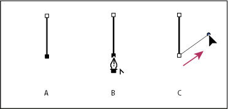
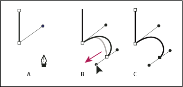

Using the Pen tool, click corner points
in two locations to create a straight segment.
Position the Pen tool over the selected endpoint. In
Illustrator and InDesign, a convert-point icon appears next to the
Pen tool when it is positioned correctly (In Photoshop, a small
diagonal line, or slash, appears next to the Pen tool). To set the slope
of the curved segment you’ll create next, click the anchor point,
and drag the direction line that appears.

Drawing a straight segment followed by a curved segment (part
1)
A.
Straight segment completed
B.
Positioning
Pen tool over endpoint (the Convert Point icon appears only in Illustrator
and InDesign)
C.
Dragging direction point
Position the pen where you want the next anchor point;
then click (and drag, if desired) the new anchor point to complete
the curve.

Drawing a straight segment followed by a curved segment (part
2)